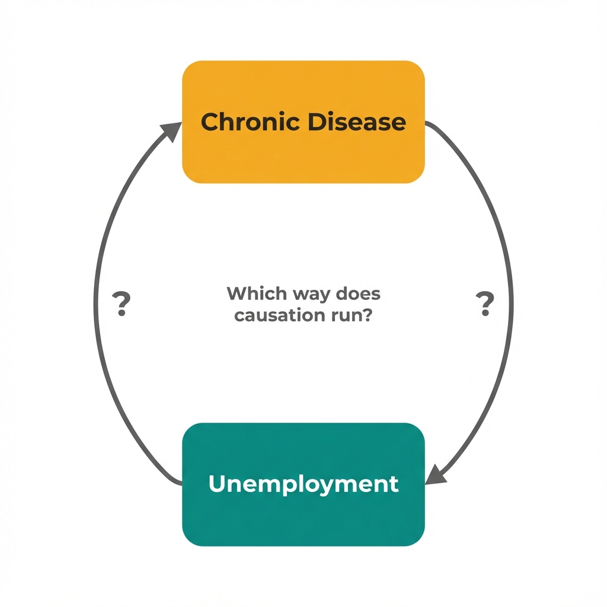

The Data
Counties with higher chronic disease rates tend to have lower employment rates. At first glance, this suggests poor health leads to unemployment. But could it be the other way around? (Data are simulated for illustration.)
Chronic Disease Rate vs Employment Rate
A clear negative correlation.
But does sickness cause job loss, or does job loss cause sickness?
Reverse Causation
We might assume X causes Y, but the causal arrow might actually point the other way. In health economics, this problem appears constantly: does healthcare improve outcomes, or do healthier people seek more care?

Two equally plausible stories from the same correlation.
Both directions are plausible.
What if both are true at the same time?
Feedback Loops
When X causes Y and Y causes X simultaneously, you get a feedback loop. Small changes amplify over time. Economists call this an equilibrium system. Adjust the parameters below to see how loops behave.
Feedback loops reach equilibrium.
But where should we intervene to shift that equilibrium?
Breaking the Loop
Economists look for "leverage points" where intervention can break feedback and shift equilibrium. The key is finding exogenous variation in one variable that doesn't come from the other.
Breaking feedback requires exogenous variation.
What does this mean for how we evaluate health programs?
Key Insight
These questions help identify when reverse causation or feedback loops threaten your analysis. They won't solve the identification problem, but they reveal where standard methods fail.
Could the outcome cause the exposure?
Before assuming X causes Y, ask whether Y could plausibly cause X. In health economics, this is common: healthier people earn more (health to income) but higher income enables better health (income to health).
What starts the loop?
In feedback systems, initial conditions matter. An external shock that affects only one side of the loop can help identify causal effects. Policy changes and natural experiments provide this.
Where are the leverage points?
Even in feedback systems, some connections are stronger than others. Understanding loop structure helps identify where intervention yields the biggest equilibrium shift per dollar spent.
What's the time structure?
If X takes years to affect Y but Y affects X quickly, careful timing can help. Panel data with enough periods can exploit these lags to identify one direction at a time.
Concepts Demonstrated in This Lab
Key Takeaway
Correlation between X and Y doesn't tell us whether X causes Y, Y causes X, or both. When variables influence each other in feedback loops, standard regression can't identify causal effects. The solution isn't more controls. It's finding exogenous variation that affects one variable without coming from the feedback system itself. Natural experiments, policy discontinuities, and timing differences provide this. This is what economists mean by "finding an instrument."